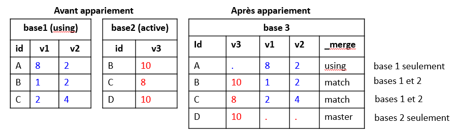

+-------------------+
| id v1 v2 v3 |
|-------------------|
1. | D 2 5 10 |
2. | E 12 1 8 |
+-------------------+
file base2.dta saved
La syntaxe de la commande append consiste à ajouter une ou plusieurs bases à la base active avec l’argument using.
appendusing base1sort idlist
+-------------------+
| id v1 v2 v3 |
|-------------------|
1. | A 8 2 . |
2. | B 1 2 . |
3. | C 2 4 . |
4. | D 2 5 10 |
5. | E 12 1 8 |
+-------------------+
On peut sélectionner les variables de la base qui sera empilée à la base active avec l’option keep.
Dans l’exemple, si la base active est base1, on peut ne pas vouloir ajouter la variable v3 seulement renseignée pour les observations de base2.
use base1, clearappendusing base2, keep(id v1 v2)list
(variable id was str6, now str20 to accommodate using data's values)
+--------------+
| id v1 v2 |
|--------------|
1. | A 8 2 |
2. | B 1 2 |
3. | C 2 4 |
4. | D 2 5 |
5. | E 12 1 |
+--------------+
Si les informations précédentes étaient ventilées dans trois bases, une par variable v, et avec le même niveau d’observation (A,B,C,D,E dans les 3 bases), l’utilisation de append conduirait à une structure empilée non souhaitable avec une réplication des id.
Pour obtenir la base finale proprement appariée, il convient de faire une fusion horizontale contrôlée par une une clé d’identification.
Merge
Stata demande que les bases soient soit triées (sort) sur la clé d’appariement en amont de l’opération. Sinon un message d’erreur sera renvoyé.
La base active (ouverte) est appelée base master
La base qui sera appariée à la base ouverte est appelée base using1
Syntaxe minimale 1 avec préfixe:
merge [1:1] [1:m][m:1] id_var using nom_base
Ici on peut apparier plus de deux bases.
On ne dispose pas de sécurité, si les niveau d’identification sont différents.
1.1.1 Même niveau d’identification
Partons des informations suivantes: - Base1 comprend la variable d’identification id (observations A,B,C) et de deux variables numériques v1 et v3 - Base2 comprend la même variable d’identification id (observations B,C,D) et de la variable numérique v3
 Le niveau d’identification est identique dans les deux bases. Il s’agit donc d’un merge 1:1 [one to one]
On va de nouveau générer les bases avec input.
clearinput str1 id v1 v2 "A" 8 2 "B" 1 2"C" 2 4 endlistsort idsave base1, replace
+--------------+
| id v1 v2 |
|--------------|
1. | A 8 2 |
2. | B 1 2 |
3. | C 2 4 |
+--------------+
file base1.dta saved
+---------+
| id v3 |
|---------|
1. | B 10 |
2. | C 8 |
3. | D 10 |
+---------+
file base2.dta saved
merge 1:1 id using base1
Result Number of obs
-----------------------------------------
Not matched 2
from master 1 (_merge==1)
from using 1 (_merge==2)
Matched 2 (_merge==3)
-----------------------------------------
L’output affiche le résultat de l’appariement à l’aide d’un tableau.
Une variable, _merge, est générée. Elle permettra de filtrer si nécessaire les observations selon le résultat de l’aapriement. Contrairement à d’autres application, cette opération n’est pas effectuée en amont avec des fonctions où des options spécifiques. Par exemple avec R: left_join, right_join, inner_join. _merge = 1 : observations qui se trouvent seulement dans la base active (master) _merge = 2 : observations qui se trouvent seulement dans la base using (appariée) _merge = 3 : observations communes aux bases master et using.
Les variables de la base master/active sont positionnées en tête.
sort idlist
+-------------------------------------+
| id v3 v1 v2 _merge |
|-------------------------------------|
1. | A . 8 2 Using only (2) |
2. | B 10 1 2 Matched (3) |
3. | C 8 2 4 Matched (3) |
4. | D 10 . . Master only (1) |
+-------------------------------------+
Si on souhaite seulement conserver les observations communes aux deux bases (_merge=3):
Pensez à supprimer la variable _merge si plusieurs opérérations d’appariement sont effectués. La commande ne prévoit pas d’écraser la variable du merge précédent.
Situation avec plus d’une base à apparier
On ne peux pas utiliser la syntaxe avec préfixe (ici merge 1:1).
On va ajouter une nouvelle base qui sera appariée avec les deux premières, qui seront donc les deux bases de type using.
clearinput str1 id str3 v4 "A""Non""B""Oui""C""Oui"endlistsort id
+----------+
| id v4 |
|----------|
1. | A Non |
2. | B Oui |
3. | C Oui |
+----------+
merge id using base1 base2order id v1 v2 v3 v4 _merge1 _merge2 _mergelist
(you are using old merge syntax; see [D] merge for new syntax)
+------------------------------------------------------+
| id v1 v2 v3 v4 _merge1 _merge2 _merge |
|------------------------------------------------------|
1. | A 8 2 . Non 1 0 3 |
2. | B 1 2 10 Oui 1 1 3 |
3. | C 2 4 8 Oui 1 1 3 |
4. | D . . 10 0 1 2 |
+------------------------------------------------------+
On obtient maintenant 3 variables _merge:
_merge1. Donne le résultat de l’appariement entre la nouvelle base et base1: 0 si seulement dans une seule des deux bases (D), 1 si dans les deux bases (A,B,C).
_merge2. Donne le résultat de l’appariement entre la nouvelle base et base2: 0 si seulement dans une seule des deux bases (A,D), 1 si dans les deux bases (B,C).
_merge. Résume rapidement le matching entre les bases: on retrouve au moins une fois les observations (A,B,C) dans l’un des deux appariement (_merge=3), on trouve une observation (D) qui ne se trouve que dans une base using (_D_merge=2).
Si l’on souhaite conserver les observations communes aux trois bases, on peut sommer les valeurs de _merge1 et _merge2 et conserver les observations dont la valeurs de cette somme est égale au nombre d’appariements; ou faire une sélection des observations avec un filtre conditionnel, ici:
{kind=link}
{kind=link}
{kind=link}